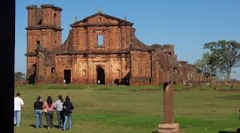

Departamento Misiones
Información General :
El Departamento de Misiones es conocido por su rica cultura, que se refleja en sus tradiciones y en la influencia de las misiones jesuíticas que se establecieron en el siglo XVIII. La región cuenta con una geografía variada, que incluye áreas montañosas y ríos, lo que la convierte en un lugar atractivo para el ecoturismo y actividades al aire libre. La economía de Misiones se basa principalmente en la agricultura, la ganadería y la producción de yerba mate, un producto emblemático de la cultura paraguaya. Además, la región es famosa por su producción de artesanías y su gastronomía. Misiones es un lugar que combina historia, cultura y naturaleza, ofreciendo a sus visitantes una experiencia única en Paraguay.
Algunas imágenes del departamento:

Fiesta de la Tradición Misionera
Lo que se observa en el video es de una fiesta que sucedió en Misiones durante cuatro días en Febrero del 2024 en los días
- Jueves 1 de Febrero
- Viernes 2 de Febrero
- Sabado 3 de Febrero
- Domingo 4 de Febrero